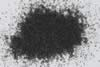

|
|
(For further information on spectroscopy, see:
http://speclab.cr.usgs.gov)
TITLE: Allanite HS293 DESCRIPT
DOCUMENTATION_FORMAT: MINERAL
SAMPLE_ID: HS293
MINERAL_TYPE: Sorosilicate
MINERAL: Allanite (Orthite, Epidote Group)
FORMULA: (Ce,Ca,Y)2(Al,Fe+3)3(SiO4)3(OH)
FORMULA_HTML: (Ce,Ca,Y)2(Al,Fe3+)3(SiO4)3(OH)
COLLECTION_LOCALITY: Ontario
ORIGINAL_DONOR: Hunt and Salisbury Collection
CURRENT_SAMPLE_LOCATION: USGS Denver Spectroscopy Laboratory
ULTIMATE_SAMPLE_LOCATION: USGS Denver Spectroscopy Laboratory
SAMPLE_DESCRIPTION:
"Allanite is an accessory mineral in many granites, granodiorites, monzonites, and syenites, and occurs in large amounts in some limestone skarns and pegmatite's. It is typically a very dark mineral, and this sample is no exception. The high ferric iron and rare earth metal content reduces the reflectivity throughout the visible and very near infrared. The high metal ion content also quenches the hydroxyl bands."
Hunt, G.R., J.W. Salisbury, and C.J. Lenhoff, 1973, Visible and near-infrared spectra of minerals and rocks: VI. Additional silicates. Modern Geology, vol. 4, pp 85-106.
IMAGE_OF_SAMPLE:

END_SAMPLE_DESCRIPTION.
XRD_ANALYSIS:
40 kV - 30 mA, 7.0-9.5 keV
File: allan293_mdi, *.out; allan2.out, *_mdi (smear mounts on quartz
plate)
References: JCPDS #25-169
Found: metamict allanite
Comment: Few very weak, broad peaks correspond to those of
allanite. Small amount of residual allanite; most of the sample has
been damaged beyond X-ray diffraction recognition by autoradiation.
J.S. Huebner, J. Pickrell, T. Schaefer, written communication 1994
END_XRD_ANALYSIS.
COMPOSITIONAL_ANALYSIS_TYPE: None # XRF, EM(WDS), ICP(Trace), WChem
COMPOSITION_TRACE: None
COMPOSITION_DISCUSSION:
None.
END_COMPOSITION_DISCUSSION.
MICROSCOPIC_EXAMINATION:
Mineral mode:
92 vol% Allanite, dark brown translucent, conchoidally fractured
surfaces, lacks any good cleavage
5 vol% Fe-stained, conchoidally fractured, possibly quartz or sphene??
3 vol% White plagioclase, with 90 degree cleavage angle
population 1 Allanite: avg. grain size = 300µm
population 2 qtz-plag: avg. grain size = 290µm
avg. grain size of populations = 299µm
Dark brown grains are pleochroic, biaxial (-), lack good cleavage, have anomalous blue interference colors, and have high relief. All these are characteristic of allanite. G. Swayze
END_MICROSCOPIC_EXAMINATION.
SPECTROSCOPIC_DISCUSSION:
END_SPECTROSCOPIC_DISCUSSION.
SPECTRAL_PURITY: 1b2b3c4_ # 1= 0.2-3, 2= 1.5-6, 3= 6-25, 4= 20-150 microns
| LIB_SPECTRA_HED: | where | Wave Range | Av_Rs_Pwr | Comment |
|---|---|---|---|---|
| LIB_SPECTRA: | splib04a r 128 | 0.2-3.0µm | 200 | g.s.= 299 µm |
| LIB_SPECTRA: | splib05a r 180 | 0.2-3.0µm | 200 | g.s.= |
| LIB_SPECTRA: | splib06a r 568 | g.s.= | ||
| LIB_SPECTRA: | splib06a r 581 | g.s.= |
{kind=link}